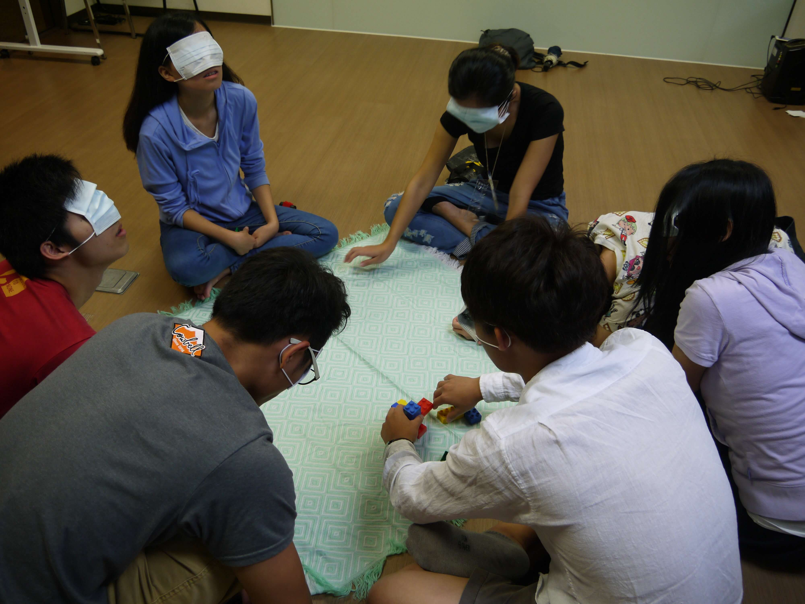
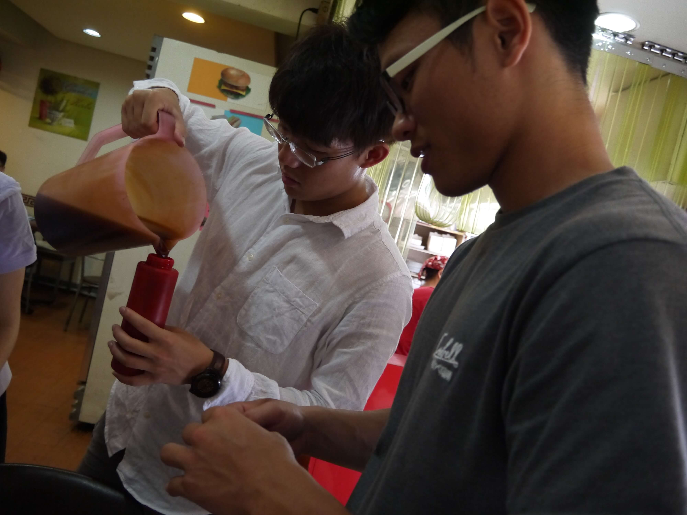
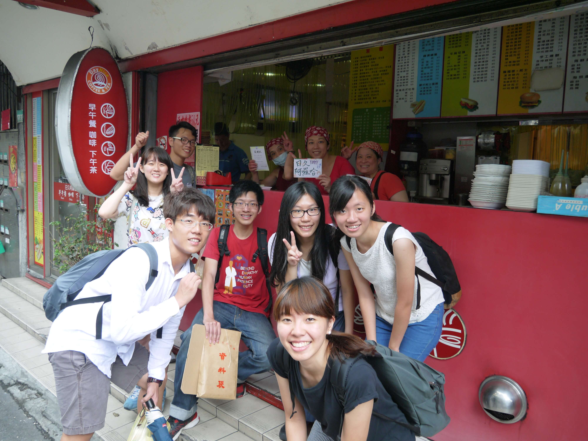
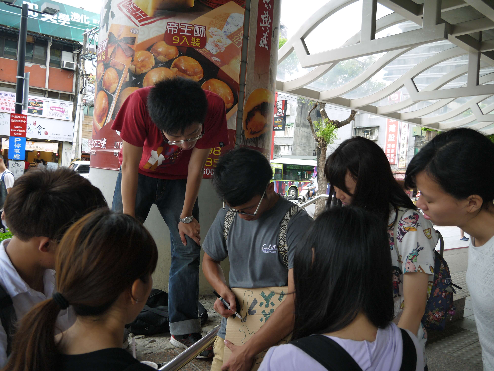
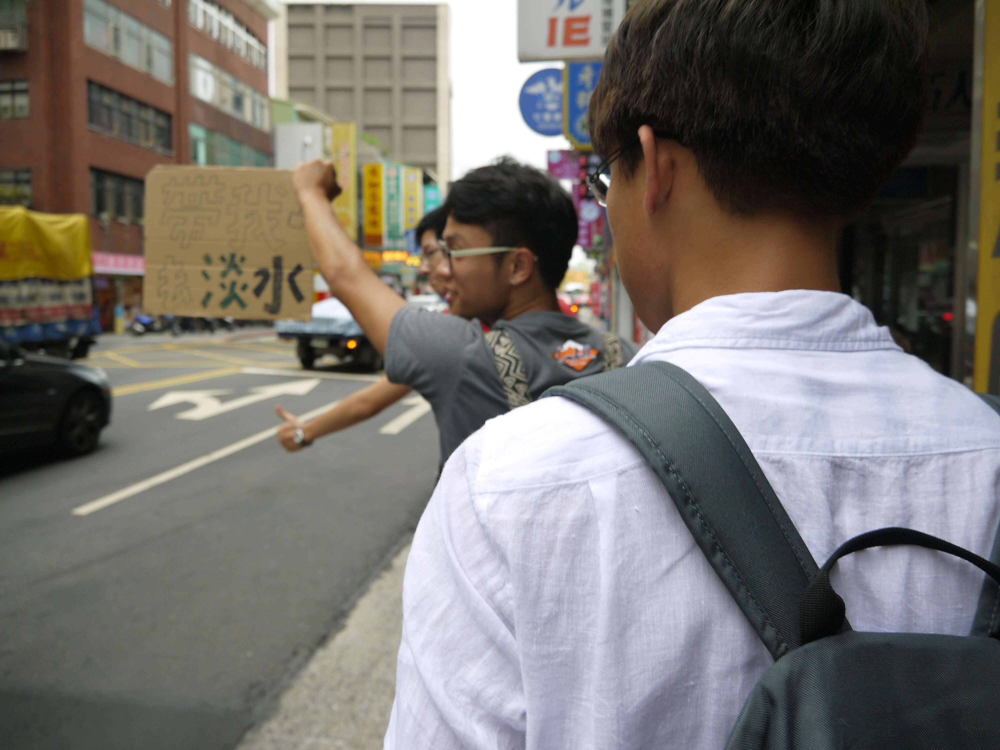
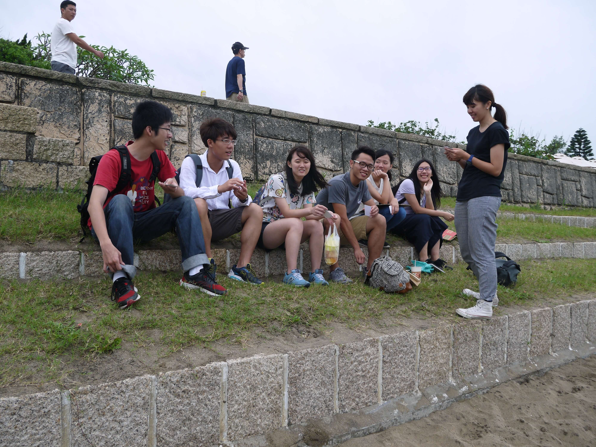

The Zero project
Background
At the end of 2016, I joined my uni's art festival team. It was a student-organized group holding art festival inside our university every year in May, in the hope to encourage students and teachers to engage in all kinds of free activities, workshops, speeches in the field of visual art, music, theater, literature..... This year's theme of the art-fest was called "The Fruits of the Earth". Inspired by the French writer André Gide's collection of ideas he wrote during his travel in the 1890s. Each small projects planned for the festival tried to merge with elements of traveling and connection to our land and environment, hope that participants can be inspired to explore themselves, and love themselves more after joining the activities. With five other students from the art-fest team, we came up with the Zero Project.
The idea
In the beginning, the idea was to go back to where pure traveling started. Without phone and internet, only a map. With low budget or even no money, and back to how people interact, helping each other out while in an unfamiliar place. We wanted our participants to step out of their comfort zone, challenge themselves while experiencing this new way of traveling, and while doing so engaging in the place, people around them a bit more.
Planning
We decided that this should be a trip without using money. By hitchhiking or exchanging skills, helping out strangers in exchange for food or a ride to complete the trip. We also wanted some discussions during the trip to help our participants reflect while doing the challenge. We thought would be cool if we could find professors who are specialized in the field of sociology, psychology or humanity and are interested in leading such topic about the meaning of lives, or maybe problem-solving, etc, would be cool if they join our project leading some discussions.
We also figured out that in Taiwan, there was already a foundation called "The Dream Fighter" holding similar kinds of events for young adults. Lacking experience of how to organize the zero budget journey, we decided to contact their founder, Lena and asked for advice. She welcomed us to her office and gave us useful tips. They also provided us with a small workshop so we get to know how they did their zero budget journey.
In the end, we took some of their ideas and merge them into our plan. We planned the project to include 16 participants, and separate into two big groups, each group consist of 2 instructors and 8 participants. Each group will work individually but with the same schedule of the project.
There are 2 hours of the ice-breaking game at the beginning inside our uni before starting the trip. By playing the games, participants will get to know their teammates for the rest of the day more. One of the games they played they have to cover their eyes, and trying to work in teams to put the lego back into the original shape. We tried to put a metaphor in the game, as we will be going on exchanging food and asking for free rides, the journey could be unknown and needs everyone in the team to help, and understand each other's needs. Also, everyone could be the one being block by the fear or doubt that occurs in the journey. There's also a lot of sharing in the first part, what everyone is expecting for the day, why they would join the challenge.
Then the group would set off to go on the streets near the campus, and exchange free food by providing services or other things they could think of. We planned the whole group to be separated into two small groups, one is the "vanguard" leading the whole team to go forward finding people who are interested in exchange, while the "rearguard" giving ideas, staying in the backline to support the vanguards and get ready to take over vanguards' job when they feel tired or frustrated.
After getting some food, the whole team needs to find a way to get to the destination we assigned them to get to. Its a beach around an hour ride by public transportation. And after that, we would have a small discussion of the journey of the day. What they think about the trip. If it was what they expected if they felt any difficulty in being the vanguards or the rearguard. And then we have a bit of a reward for a nice dinner at the end of the trip.
We decided not to include professors in our journey but to lead the discussions ourselves, since the scheduled time for our project didn't match some of their tight schedules, and some of the professors worried about the safeness of the trip. It's understandable, but as we tried to challenge the possibility of trust, and we thought would be alright when we go with a group of people. I remembered Lena mentioning a good point that people giving free help in exchange, are also struggling whether they should give their trust.
In the end, the project was successfully carried out.
Here are some pictures of the memories of the day.
     Reflection
For some participants, they reflected that they enjoyed a good adventure. For some, the project inspired them to do something different. Like going on a long trip on their own in the future. Some are still debating whether they should accept free help when they didn't feel like they have given the same value of service in exchange.
To me, the Zero Project had been a great experience and a great memory of mine. Through half-year of work, meeting up after school with my teammates to come up with the plan, writing emails back and forth to schedule meetings with professors and the Lena. Thinking of every detail we might miss while just planning. It is more about believing, trying out something big and new in my life. Also revealing my weakness in front of my teammates when facing the stress. I am happy with the progress we had in the end.